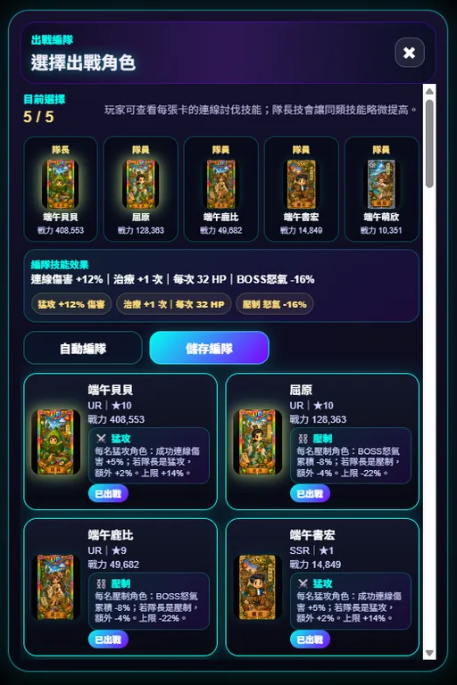

收集直播主卡牌
透過卡池、關卡、活動與遊戲內獎勵收集不同稀有度與風格的直播主卡牌。
不需要登入也能閱讀遊戲規則、系統介紹、更新紀錄、FAQ、隱私權政策與使用條款。
T-LO 實況星域以直播主卡牌、隊伍編成、星域佔領與資源發展為主軸。
透過卡池、關卡、活動與遊戲內獎勵收集不同稀有度與風格的直播主卡牌。
編成巡演團體，運用卡牌粉絲戰力與技能，挑戰不同戰鬥與地圖目標。
從總部出發，攻下相鄰地塊、資源地與年度盛典周邊，逐步擴張影響力。
透過人氣與打賞升級發展項目，解鎖更多隊伍、卡位、持有格與分公司功能。
娛樂主播、實況主播與虛擬主播各有不同推進方向，影響資源、粉絲或科技節奏。
佔領資源地、領取地盤產出，將人氣與打賞投入科技與分公司建設。
星潮沙盤戰目前使用三個正式陣營名稱。選定後會在賽季地圖中生成總部，與同陣營玩家一起推進。
人氣值與打賞產量提升，適合穩定累積資源與擴張地盤。
粉絲加成提升，適合正面攻格與挑戰高等級地塊。
發展完成時間縮短，適合長線經營與快速解鎖功能。
遊戲主介面已更新為星域基地風格，重要功能以大廳入口呈現，聊天與選單改為右下角快捷圖示。
查看玩家狀態、公告跑馬燈、抽卡次數、能量、訓練總分與卡盒進度。
選擇卡池、單抽或十連招募角色，近期抽卡結果會集中展示。
整合爭霸戰、命運三選一、連線討伐戰、遠征、競技場、魔王與世界BOSS；通關主線相關模式可累積星域通行證分數。
世界頻道、系統頻道與好友私訊整合在聊天視窗中，私訊會主動顯示通知。
新版連線討伐戰改為 5 張出戰編隊制。盤面只會出現玩家選擇的 5 張卡，隊長卡出現率較高，每張出戰卡至少會進入盤面；稀有度不再控制出現率，而是影響卡牌傷害與技能價值。

以下為目前實際遊戲畫面，包含主城大廳、抽卡、戰鬥、世界BOSS、連線討伐、出戰編隊與遠征異世界。




夏日冰品大賞以海邊、冰品與卡牌邊框為主題，強化活動卡池的收藏感。